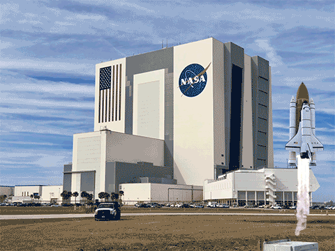

Title: Last Breath
Purpose: Record a sound and in the editing process, combine the material the class has recorded with other audio files where we tell a story with a clear beginning, middle, and end. The listener should be able to envision specific streets/environments/people etc.
Meaning: I'm basically trying to describe a fighter who's last name is "Hernandez".The story takes place in a boxing arena where "Hernandez" defeats "Gomez". "Hernandez" trained hard and believe in himself while nobody else did; not even his grandma. The only person who believed in him was his girlfriend who cheer him in every round.
Title: NASA GIF
Purpose: Create a 10-sec animation in After Effects about an emotion or Submit the storyboard and script content of a 1-min animationof your PSA. The composition should include solids, text, shape layers, masks, images, video, effects and/or, audio files. Animate some properties: opacity, position, scale, rotation, etc.
Meaning: I decided to create a GIF of a NASA Rocket launching into space. I added 4 layers of smoke using opacity at the begging to show how the smoke was created after the rocket advanced to space.
Title: Raster Image
Purpose: Take/find images of yourself or something that represents you, and combine them in Photoshop. Make sure to not upsample your images.Use the tools such as (selection, mask layers, adjustment layers, filters, crop tool, etc.) to create your composition.
Meaning: I only chose two images for my project to identify who I am, because I believe they are more than enough to describe me. The first one is a Selfie that I use to show who I am. The second image not only did I used it as a background, but I also used it because it was taken 6 years ago in the same area where I still lived at and it brings me nostalgia.
Title: Vector Image
Purpose: Make a square vector/Illustrator file that represents you using only geometrical shapes (the final image can be abstract or representational).
Meaning: I choose black, Grey, and white, because they give a good contrast. I usually wear more dark colors than bright and in some way I believe these colors represent me. My source of inspiration is an artist named Drake. His 5th album has the same colors and I thought it would be a good idea to use the same colors in this proyect.
Title: Covid-19
Purpose: Create an animated /interactive p5.js sketch. Add visual elements and interactivity. Use at least one custom variable, use comments to clarify important segments of your code.
Meaning: